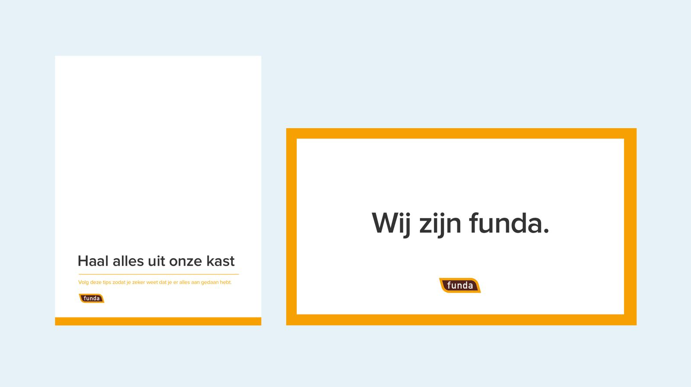
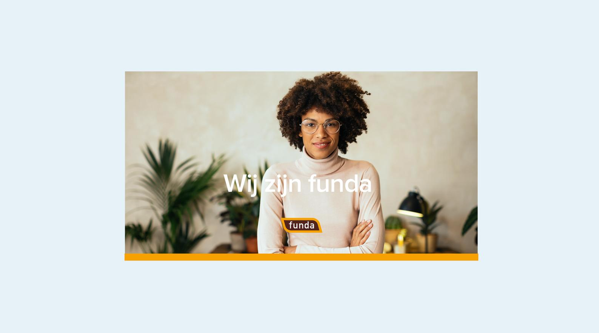

Logo
We bereiken onze gebruikers op verschillende plekken: funda wonen, funda voor makelaars, funda in business en de funda desk. Alle vier hebben een eigen logo waardoor de gebruiker weet waar hij zich bevindt.
-
Het logo met de oranje rand is het primaire logo, verwijzend naar de oranje hoofdkleur van funda wonen. Je gebruikt dit logo op een witte achtergrond.
-
Het logo met de blauwe rand gebruik je alleen bij een oranje achtergrond. Probeer het gebruik van dit logo op een niet-oranje achtergrond te vermijden.
Plaatsing
De plaatsing van het logo is afhankelijk van het doel van de communicatie-uiting
-
Informatief: uitlijning bij voorkeur rechts of links om leesgemak te bevorderen, denk aan brochures. In video's kan het logo klein rechts- of linksboven in de hoek geplaatst worden.
-
Inspirerend: uitlijning mag ook in het midden, denk aan presentatie covers en campagneposters


Typografie
Het is ons lettertype; leesbaar voor zowel web, app als print. Proxima Nova heeft een vriendelijk uiterlijk en is zowel karakteristiek als flexibel.
Kleuren
Je vindt hier een overzicht van onze primaire en secundaire merkkleuren.
En de verhouding waarin ze worden gebruikt.
Tone of voice
We schrijven over onderwerpen die geen dagelijkse kost zijn voor onze doelgroepen. Voor ons wel. We weten dus we waar we het over hebben, maar zijn nooit belerend. Ook doen we geen aannames. We snappen dat iedereen een andere situatie heeft en houden daar rekening mee. In de manier waarop we schrijven. En de dingen waarover we schrijven.
Vormen
Herkenbaarheid in design en uitingen is belangrijk. Door het toepassen van vormen breng je hierarchie, dynamiek en moderniteit naar de algemene uitstraling van de brand.
Compositie & hierarchie
Compositie betekent het samenstellen van verschillende elementen om een geheel te vormen. Hiërarchie is een manier om elementen, maar ook personen en gegevens te ordenen op basis van belangrijkheid of rang. In visual design komen compositie en hiërarchie samen in de vorm van layouts die gebruikt kunnen worden in communicatie uitingen om een boodschap over te brengen en een prettig ervaring te leveren aan de ontvanger.